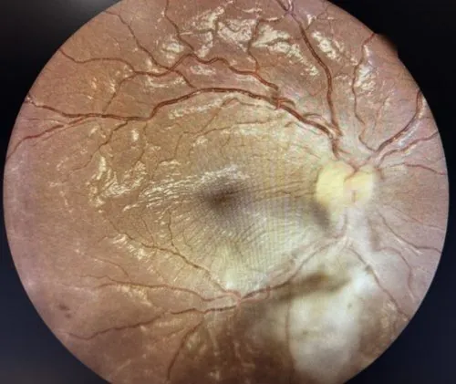

其他无脊椎动物 · 动物界
刚地弓形虫 Toxoplasma gondii

以猫科动物为终宿主的细胞内寄生虫，人常因吃未熟肉或接触猫粪而感染，孕妇初次感染可能影响胎儿。
- 分类
- 门顶复动物门纲球虫纲目真球虫目科弓形虫科属弓形虫属
- 栖息环境
- 猫科动物的肠道上皮，以及中间宿主的脑、肌肉等组织内
- 地理分布
- 全球分布，人群血清抗体阳性率较高
- 保护级别
- 暂无评估
物种志
刚地弓形虫是一种细胞内寄生原虫，生活史中有速殖子、缓殖子和卵囊等不同形态。速殖子呈新月形，长4–8微米，在宿主细胞内快速分裂；缓殖子藏在脑和肌肉的组织囊里，可以潜伏多年；卵囊随猫粪排出，直径约10–12微米，在潮湿土壤中能存活一年以上。
猫科动物是唯一的终宿主，猫吞食含组织囊的鼠或生肉后，虫体在小肠上皮进行有性繁殖，产出卵囊。人和其他温血动物是中间宿主，感染途径主要有：吃未煮熟的猪肉、羊肉，接触猫砂或污染土壤后不洗手，饮用被卵囊污染的水，以及孕妇经胎盘传给胎儿。健康人感染多无症状，或只有轻微发热和淋巴结肿大；孕妇初次感染可能引起流产、胎儿畸形，免疫功能低下者可发生脑炎。预防要把肉彻底煮熟、清理猫砂时戴手套并洗手、孕妇避免接触猫砂、蔬菜洗净。
形态与习性
- 形态速殖子新月形，长4–8微米
- 终宿主猫科动物，虫体在其肠道进行有性繁殖
- 中间宿主人、猪、羊、鼠等多种温血动物
- 感染途径未熟肉、猫粪污染、母婴垂直传播
- 风险人群孕妇与免疫功能低下者
- 防护肉彻底煮熟、清理猫砂戴手套、蔬菜洗净
趣味知识
- 猫是弓形虫唯一的终宿主，卵囊随猫粪排出。
- 吃未煮熟的猪肉、羊肉，也可能感染弓形虫。
- 孕妇初次感染，可能把虫体传给胎儿。